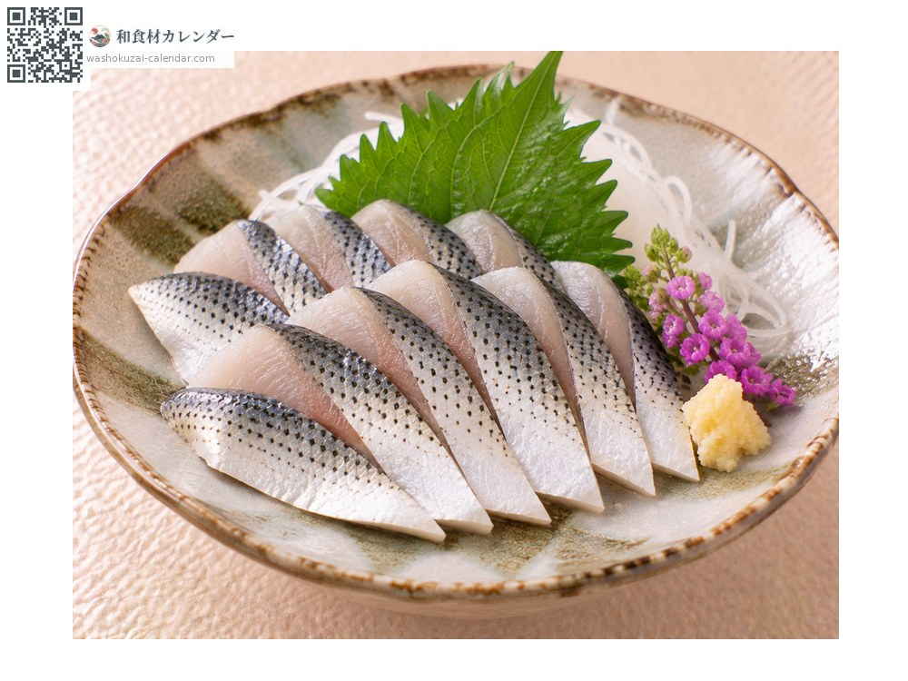
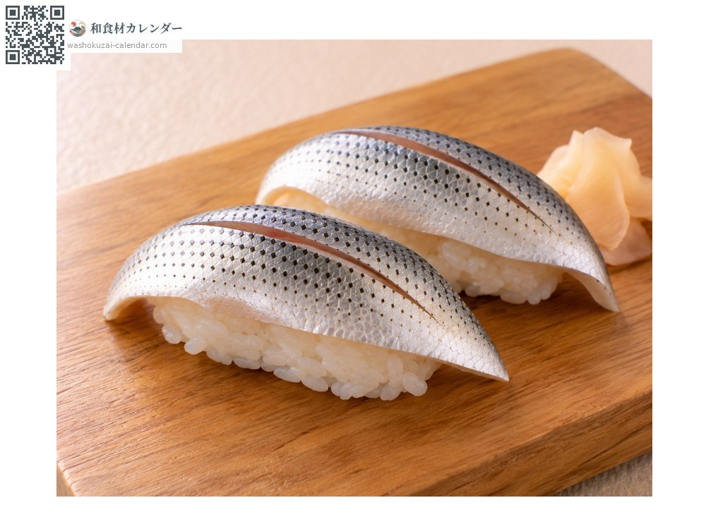
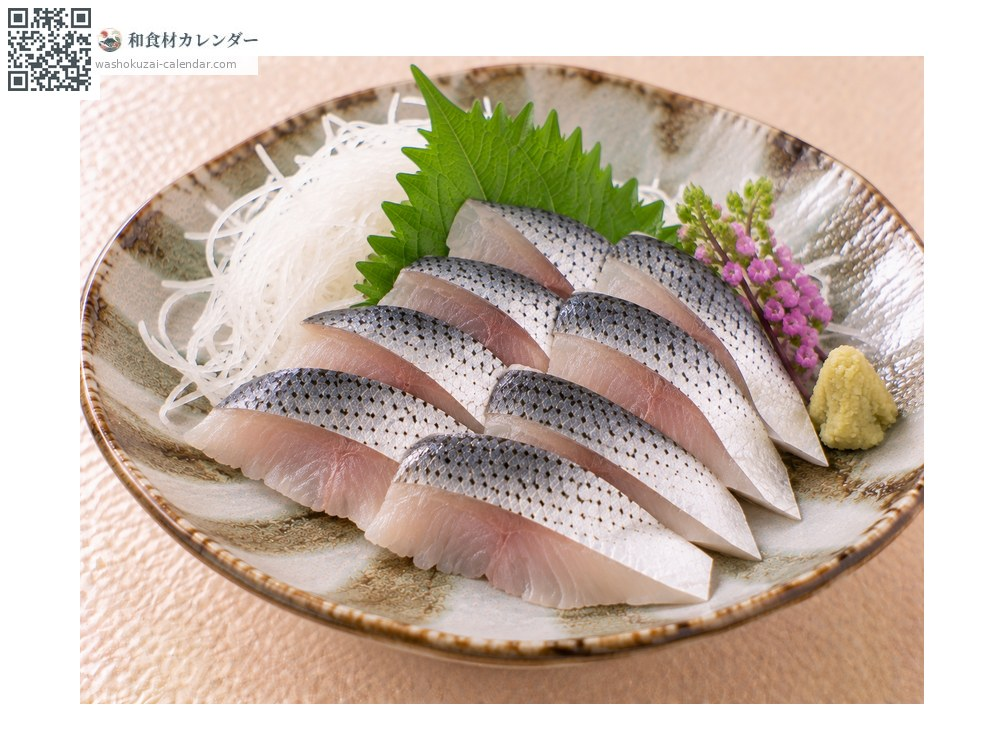
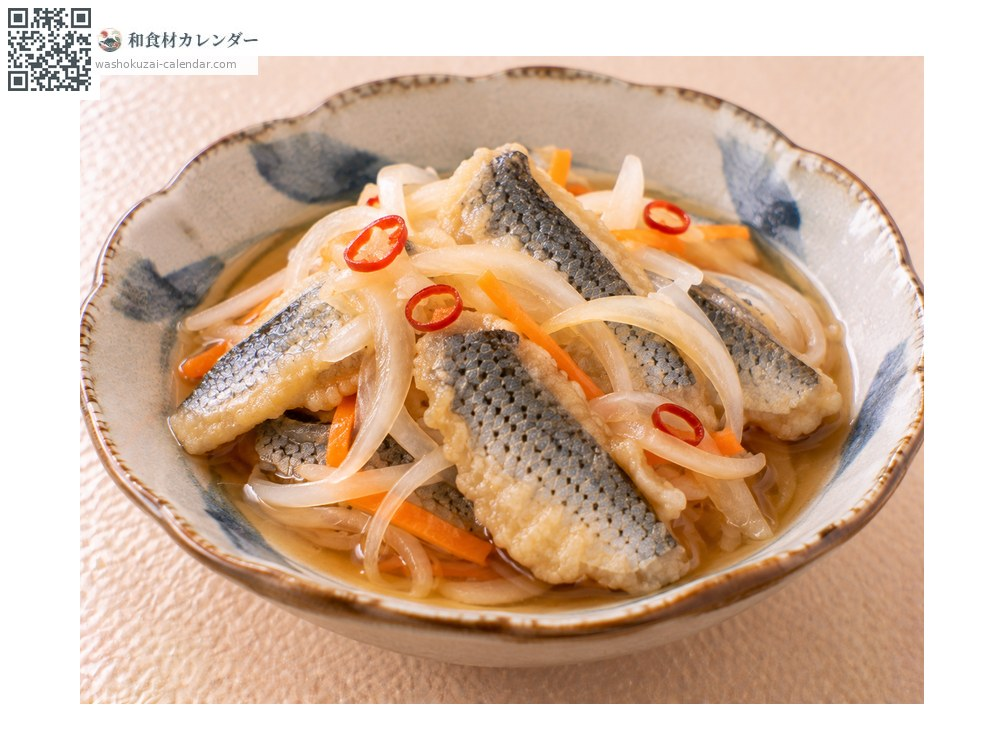

魚介
コハダ
こはだ
別名・別表記小鰭、鮗、コノシロ、kohada、konoshiro
旬は7月・8月・9月

旬の時期
1月
2月
3月
4月
5月
6月
7月
8月
9月
10月
11月
12月
旬出回り
調理法

酢締め
塩を当ててから酢に漬ける。締め加減が職人の腕の見せどころ。

寿司
握りの種として珍重される。光り物の代表格。

刺身
新鮮なものは生でも。脂と酸味の調和が身上。

南蛮漬け
揚げてから漬ける。骨まで食べられる。
選び方
体側の斑点が明瞭で、銀色に輝いているもの。身に張りがあるもの。
保存方法
鮮度落ちが早い。当日中に酢締めにするのが基本。締めたものは2〜3日持つ。
主な産地
豆知識
成長とともに名前が変わる出世魚。シンコ、コハダ、ナカズミ、コノシロと呼び分ける。夏の初物シンコは高値がつき、江戸前寿司の職人が腕を競う。名が「この城」に通じるため武家に嫌われたという話も残る。